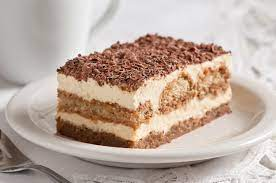

Tiramisu

Description
Tiramisu is one of the most famous Italian dessert in the world,born in Treviso (a lovely town near Venice), delicious and easy to make.
Ingredients
- 300g Savoiardi Ladyfingers
- 100g of Granulated Suger
- 500g of Mascarpone Cheese
- 4 Medium Eggs
- 2 Tablespoons of Rum of Marsala
- Unsweetened Cocoa Powder
Steps
- Make the coffee. Then add the rum of Marsala.
- Separate the egg whites from the yolks. whip the egg whites until stiff.
- Beat the egg yolks with sugar until light and smooth. 3/6 minutes.
- Pour the mascarpone cheese into a bowl and make it softer. When the yolks are ready add the mascarpone cheese.
- Slowly whip the mascarpone cream for 3 minutes. Now add the stiffy beaten egg whites.
- Mix with a wooden spoon, from bottom up. Mix slowly until smooth and creamy.
- Dip the ladyfingers quickly (1 or 2 seconds) into the coffee. Then arrange the ladyfingers in the casserole.
- Arrange them so that they cover the bottom of the casserole. Spread the mascarpone cream over the ladyfingers.
- Add another layer of ladyfingers and then top with more mascarpone cream.
- Finally, sprinkle with cocoa powder. You can add chocolate chips if you like.